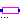

The components of this package should no longer be used. They are only provided for backward compatibility. It is much more convenient and more powerful to use "expandable connectors" for signal buses, see example BusUsage.
| Name | Description |
|---|---|
| Obsolete block to send Real signal to bus | |
| Obsolete block to send Boolean signal to bus | |
| Obsolete block to send Integer signal to bus | |
| Obsolete block to receive Real signal from bus | |
| Obsolete block to receive Boolean signal from bus | |
| Obsolete block to receive Integer signal from bus | |
| AdaptorReal | Completely obsolete adaptor between 'old' and 'new' Real signal connectors (only for backward compatibility) |
|  AdaptorBoolean | Completely obsolete adaptor between 'old' and 'new' Boolean signal connectors (only for backward compatibility) |
| Completely obsolete adaptor between 'old' and 'new' Integer signal connectors (only for backward compatibility) |
 Modelica.Blocks.Interfaces.Adaptors.SendReal
Modelica.Blocks.Interfaces.Adaptors.SendReal

Obsolete block that was previously used to connect a Real signal to a signal in a connector. This block is only provided for backward compatibility.
It is much more convenient and more powerful to use "expandable connectors" for signal buses, see example BusUsage.
| Type | Name | Description |
|---|---|---|
| output RealOutput | toBus | Output signal to be connected to bus |
| input RealInput | u | Input signal to be send to bus |
block SendReal "Obsolete block to send Real signal to bus" RealOutput toBus "Output signal to be connected to bus"; RealInput u "Input signal to be send to bus"; equation toBus = u; end SendReal;
 Modelica.Blocks.Interfaces.Adaptors.SendBoolean
Modelica.Blocks.Interfaces.Adaptors.SendBoolean

Obsolete block that was previously used to connect a Boolean signal to a signal in a connector. This block is only provided for backward compatibility.
It is much more convenient and more powerful to use "expandable connectors" for signal buses, see example BusUsage.
| Type | Name | Description |
|---|---|---|
| output BooleanOutput | toBus | Output signal to be connected to bus |
| input BooleanInput | u | Input signal to be send to bus |
block SendBoolean "Obsolete block to send Boolean signal to bus" BooleanOutput toBus "Output signal to be connected to bus"; BooleanInput u "Input signal to be send to bus"; equation toBus = u; end SendBoolean;
 Modelica.Blocks.Interfaces.Adaptors.SendInteger
Modelica.Blocks.Interfaces.Adaptors.SendInteger

Obsolete block that was previously used to connect an Integer signal to a signal in a connector. This block is only provided for backward compatibility.
It is much more convenient and more powerful to use "expandable connectors" for signal buses, see example BusUsage.
| Type | Name | Description |
|---|---|---|
| output IntegerOutput | toBus | Output signal to be connected to bus |
| input IntegerInput | u | Input signal to be send to bus |
block SendInteger "Obsolete block to send Integer signal to bus" IntegerOutput toBus "Output signal to be connected to bus"; IntegerInput u "Input signal to be send to bus"; equation toBus = u; end SendInteger;
 Modelica.Blocks.Interfaces.Adaptors.ReceiveReal
Modelica.Blocks.Interfaces.Adaptors.ReceiveReal

Obsolete block that was previously used to connect a Real signal in a connector to an input of a block. This block is only provided for backward compatibility.
It is much more convenient and more powerful to use "expandable connectors" for signal buses, see example BusUsage.
| Type | Name | Description |
|---|---|---|
| input RealInput | fromBus | To be connected with signal on bus |
| output RealOutput | y | Output signal to be received from bus |
block ReceiveReal "Obsolete block to receive Real signal from bus" RealInput fromBus "To be connected with signal on bus"; RealOutput y "Output signal to be received from bus"; equation y = fromBus; end ReceiveReal;
 Modelica.Blocks.Interfaces.Adaptors.ReceiveBoolean
Modelica.Blocks.Interfaces.Adaptors.ReceiveBoolean

Obsolete block that was previously used to connect a Boolean signal in a connector to an input of a block. This block is only provided for backward compatibility.
It is much more convenient and more powerful to use "expandable connectors" for signal buses, see example BusUsage.
| Type | Name | Description |
|---|---|---|
| input BooleanInput | fromBus | To be connected with signal on bus |
| output BooleanOutput | y | Output signal to be received from bus |
block ReceiveBoolean "Obsolete block to receive Boolean signal from bus" BooleanInput fromBus "To be connected with signal on bus"; BooleanOutput y "Output signal to be received from bus"; equation y = fromBus; end ReceiveBoolean;
 Modelica.Blocks.Interfaces.Adaptors.ReceiveInteger
Modelica.Blocks.Interfaces.Adaptors.ReceiveInteger

Obsolete block that was previously used to connect an Integer signal in a connector to an input of a block. This block is only provided for backward compatibility.
It is much more convenient and more powerful to use "expandable connectors" for signal buses, see example BusUsage.
| Type | Name | Description |
|---|---|---|
| input IntegerInput | fromBus | To be connected with signal on bus |
| output IntegerOutput | y | Output signal to be received from bus |
block ReceiveInteger "Obsolete block to receive Integer signal from bus" IntegerInput fromBus "To be connected with signal on bus"; IntegerOutput y "Output signal to be received from bus"; equation y = fromBus; end ReceiveInteger;
 Modelica.Blocks.Interfaces.Adaptors.AdaptorReal
Modelica.Blocks.Interfaces.Adaptors.AdaptorReal

Completely obsolete adaptor between the Real signal connector of version 1.6 and version ≥ 2.1 of the Modelica Standard Library. This block is only provided for backward compatibility.
| Type | Name | Description |
|---|---|---|
| RealSignal | newReal | Connector of Modelica version 2.1 |
| RealPort | oldReal | Connector of Modelica version 1.6 |
model AdaptorReal
"Completely obsolete adaptor between 'old' and 'new' Real signal connectors (only for backward compatibility)"
RealSignal newReal "Connector of Modelica version 2.1";
RealPort oldReal(final n=1) "Connector of Modelica version 1.6";
protected
connector RealPort "Connector with signals of type Real"
parameter Integer n=1 "Dimension of signal vector";
replaceable type SignalType = Real "type of signal";
SignalType signal[n] "Real signals";
end RealPort;
equation
newReal = oldReal.signal[1];
end AdaptorReal;
Completely obsolete adaptor between the Real signal connector of version 1.6 and version ≥ 2.1 of the Modelica Standard Library. This block is only provided for backward compatibility.
| Type | Name | Description |
|---|---|---|
| BooleanSignal | newBoolean | Connector of Modelica version 2.1 |
| BooleanPort | oldBoolean | Connector of Modelica version 1.6 |
model AdaptorBoolean
"Completely obsolete adaptor between 'old' and 'new' Boolean signal connectors (only for backward compatibility)"
BooleanSignal newBoolean "Connector of Modelica version 2.1";
BooleanPort oldBoolean(final n=1) "Connector of Modelica version 1.6";
protected
connector BooleanPort "Connector with signals of type Boolean"
parameter Integer n=1 "Dimension of signal vector";
replaceable type SignalType = Boolean "type of signal";
SignalType signal[n] "Boolean signals";
end BooleanPort;
equation
newBoolean = oldBoolean.signal[1];
end AdaptorBoolean;
Completely obsolete adaptor between the Real signal connector of version 1.6 and version ≥ 2.1 of the Modelica Standard Library. This block is only provided for backward compatibility.
| Type | Name | Description |
|---|---|---|
| IntegerSignal | newInteger | Connector of Modelica version 2.1 |
| IntegerPort | oldInteger | Connector of Modelica version 1.6 |
model AdaptorInteger
"Completely obsolete adaptor between 'old' and 'new' Integer signal connectors (only for backward compatibility)"
IntegerSignal newInteger "Connector of Modelica version 2.1";
IntegerPort oldInteger(final n=1) "Connector of Modelica version 1.6";
protected
connector IntegerPort "Connector with signals of type Integer"
parameter Integer n=1 "Dimension of signal vector";
replaceable type SignalType = Integer "type of signal";
SignalType signal[n] "Integer signals";
end IntegerPort;
equation
newInteger = oldInteger.signal[1];
end AdaptorInteger;
connector RealPort "Connector with signals of type Real" parameter Integer n=1 "Dimension of signal vector"; replaceable type SignalType = Real "type of signal"; SignalType signal[n] "Real signals"; end RealPort;
connector BooleanPort "Connector with signals of type Boolean" parameter Integer n=1 "Dimension of signal vector"; replaceable type SignalType = Boolean "type of signal"; SignalType signal[n] "Boolean signals"; end BooleanPort;
connector IntegerPort "Connector with signals of type Integer" parameter Integer n=1 "Dimension of signal vector"; replaceable type SignalType = Integer "type of signal"; SignalType signal[n] "Integer signals"; end IntegerPort;